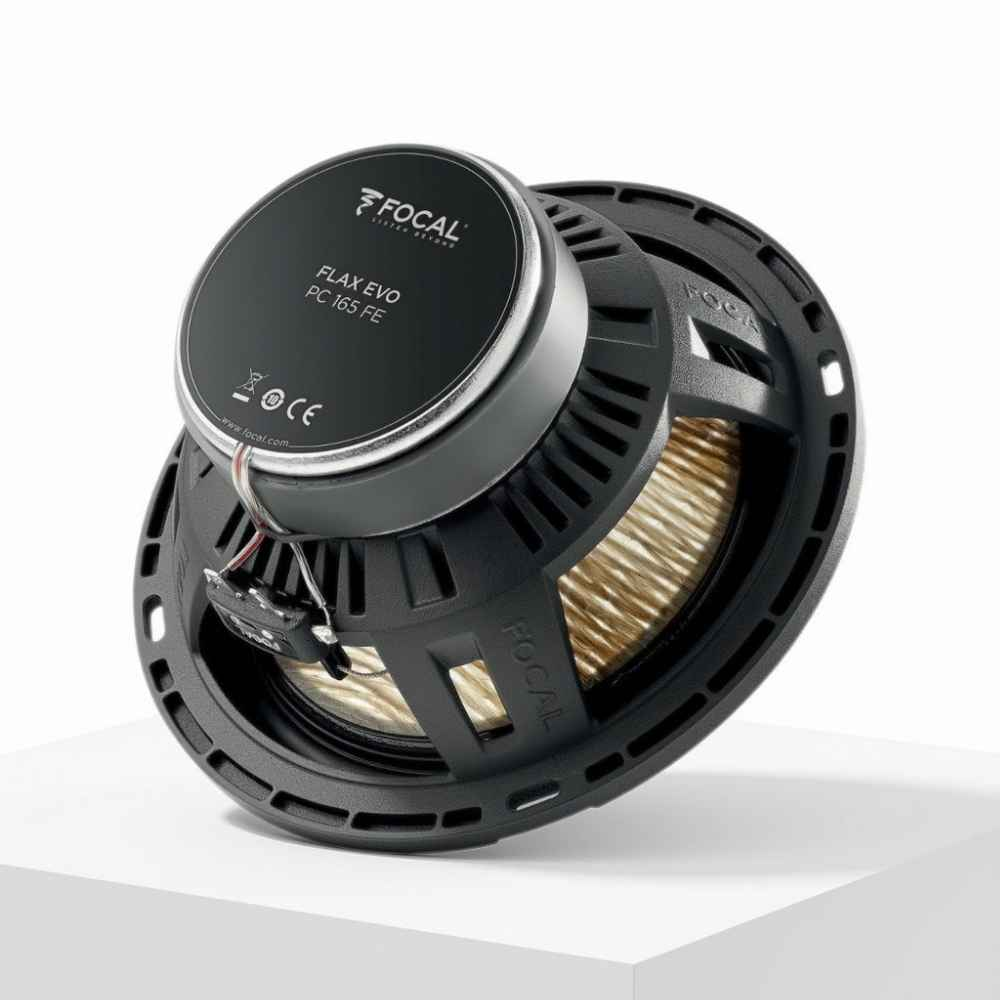
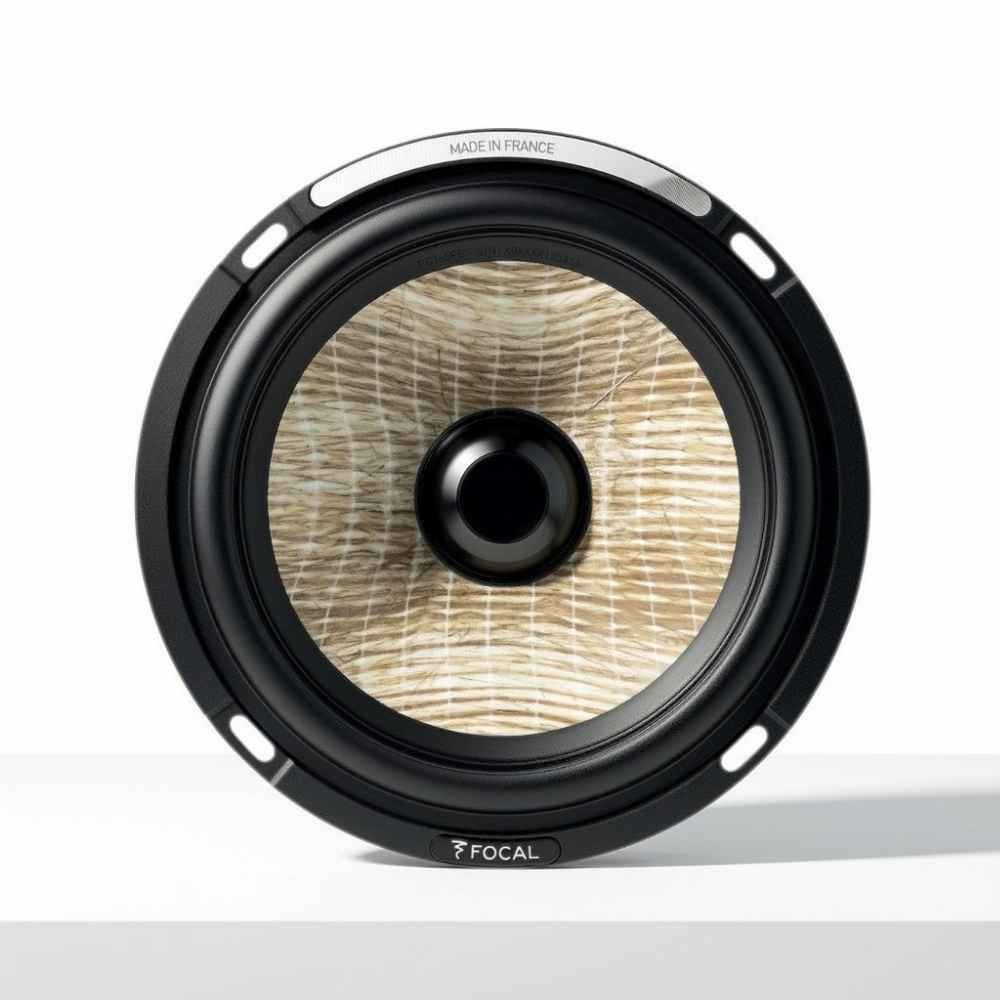

Focal Flax Evo PS 165 FE tại Văn Long Auto
1. Đẳng cấp âm thanh Audiophile từ nước Pháp
Bộ loa phân tần Focal Flax Evo PS 165 FE (kích thước 16,5cm) thuộc phân khúc cao cấp, được nghiên cứu và lắp ráp thủ công 100% tại nhà máy Focal ở Pháp. Sản phẩm này sinh ra dành cho những đôi tai Audiophile khắt khe, mong muốn biến khoang nội thất ô tô thành một phòng nghe nhạc Hi-End thực thụ với sự chi tiết, tách bạch và độ động tuyệt vời.

THÊM ẢNH ĐẶC ĐIỂM 1 VÀO SRC2. Màng loa sợi lanh tự nhiên (Flax Cone) độc quyền
Điểm làm nên tên tuổi của dòng Flax Evo chính là màng loa Mid-Bass được chế tác từ sợi lanh tự nhiên (Flax) chất lượng cao nhất nước Pháp, kẹp giữa hai lớp sợi thủy tinh mỏng. Cấu trúc độc đáo này giúp màng loa siêu nhẹ nhưng lại cực kỳ cứng cáp. Kết quả là sự tái tạo âm thanh tự nhiên, trung tính, không bị pha lẫn tạp âm và một dải trầm (Bass) sâu, uy lực.
3. Công nghệ viền giảm chấn TMD (Tuned Mass Damper)
Focal đã tích hợp công nghệ viền nhún giảm chấn TMD (thừa hưởng từ dòng loa Home hi-end Sopra) vào PS 165 FE. Hai vòng đệm hình ống trên viền loa giúp ổn định độ phản hồi, loại bỏ triệt để hiện tượng cộng hưởng và méo tiếng ở dải trung (Midrange). Nhờ đó, giọng hát của ca sĩ trở nên mượt mà và chân thực đến khó tin.

THÊM ẢNH ĐẶC ĐIỂM 2 VÀO SRC4. Loa Tweeter TAM nhôm/magiê cấu trúc chữ M
Dải âm cao (Treble) được đảm nhiệm bởi củ loa Tweeter TAM với vòm ngược làm từ hợp kim Nhôm/Magiê mang mặt cắt hình chữ 'M'. Thiết kế này mở rộng điểm ngọt (sweet spot), mang lại góc khuếch tán âm thanh cực rộng. Từng nốt cao được đánh tơi xốp, chính xác và vô cùng êm ái, hoàn toàn không gây mệt tai khi nghe thời gian dài.
5. Phân tần Audiophile & Thi công chuẩn mực
Bộ Crossover đi kèm sử dụng các linh kiện tụ điện, cuộn cảm cấp độ Audiophile, cho phép điều chỉnh mức dải cao để phù hợp với không gian từng xe. Tại Văn Long Auto, một bộ loa cao cấp như PS 165 FE sẽ được thi công với quy trình đặc biệt: sử dụng cốt loa chống nước, đệm tiêu âm, đi dây tín hiệu chuyên dụng và căn chỉnh pha âm học tỉ mỉ để khai thác 100% giá trị sản phẩm.